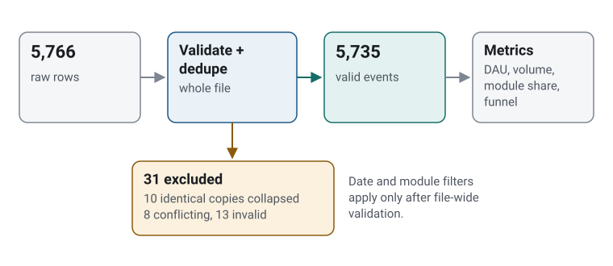
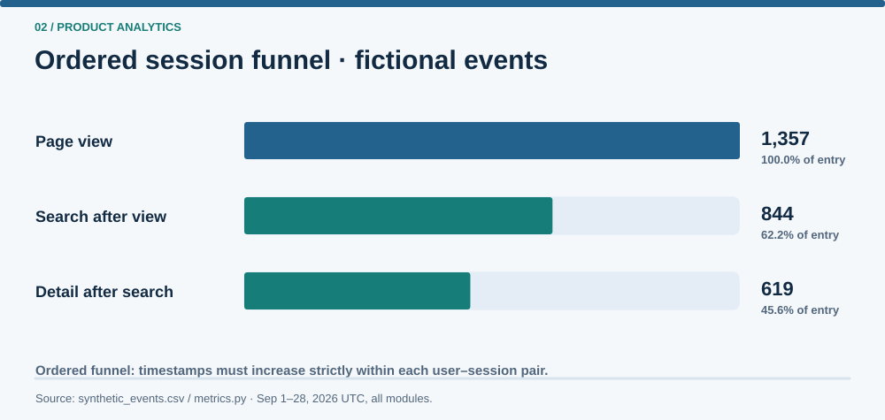

Professional work and public-demo boundary
Relevant professional responsibility
I expanded live administrator reporting for an industrial B2B business platform to track adoption by role and organization, weekly retention and storage growth, while distinguishing frontend reporting needs from backend data requirements.
Scope of this public demonstration
This public Streamlit/pandas demonstration uses invented users, sessions and events to explore metric definitions, filtering and reconciliation. It does not display or reproduce company telemetry, production dashboards or business performance.
The problem
Event volume, distinct users and progression through a workflow answer different product questions. This fictional dashboard demonstrates how event validation, filter scope and explicit denominators affect those answers, without using real telemetry or drawing conclusions about a real company's adoption.
System diagrams and synthetic results


(user_id, session_id) pairs and strictly increasing event timestamps. It is not a user-conversion or employer adoption metric.What the demonstration contains
A seeded generator creates fictional timestamped events. Separate validation and metric modules feed a Streamlit dashboard with UTC date and module filters, daily active users, event volume, module event counts and an ordered session funnel. File-wide validation diagnostics remain separate from filtered usage totals.
Technical approach
Valid events use an ASCII UTC timestamp format. Identical payloads sharing an event ID collapse to one event; conflicting payloads quarantine every row for that ID. Missing required fields are rejected. Excluded-event diagnostics preserve original text and logical source-record numbers rather than claiming physical CSV line numbers.
Usage filters apply before aggregation. Date selection includes the start at midnight UTC and excludes midnight after the end date; filtering can cut a session. Daily active users are distinct users, not a sum of per-module user counts. A session is a (user_id, session_id) pair.
The funnel counts a session once per stage only when page_view, search and detail_view occur in strictly increasing time order. Repeated actions do not multiply sessions; tied timestamps alone do not establish order. Conversion uses first-step eligible sessions as its denominator and displays N/A when that population is empty.
Validation and results
During the first review round, I also ran the documented commands myself in PowerShell, and the outputs matched the agents' reports. The results below, including later corrections, are agent-run, on Windows 11 with Python 3.13.15, pandas 3.1.0, Streamlit 1.66.1, Altair 6.3.0 and pytest 9.1.1. All data and counts are synthetic.
| Public-demo claim | Command and result | Status |
|---|---|---|
| Generation is deterministic and validation counts reconcile | python generate_sample_data.py, then a repeat: 5766 raw = 5735 valid + 10 collapsed + 8 quarantined + 13 rejected; byte-identical CSV |
VERIFIEDagent-run; synthetic data |
| Metric, validation and dashboard regressions pass | python -m pytest -q: 44 passed |
VERIFIEDagent-run |
| Funnel semantics match hand-checkable fixtures | The test_funnel_full_range fixture produces 7 / 3 / 2 sessions; tests cover ties, repeats, session identity, filters and empty denominators |
VERIFIEDagent-run |
| Dashboard totals and empty selections render | In a browser, streamlit run app.py shows 5735 events / 175 invented users / 1520 sessions / 1357 funnel entries; clearing all modules gives zero usage while diagnostics stay file-wide, with no browser errors |
VERIFIEDagent-run |
| Other platforms and dependency versions; accessibility audit | Not performed | NOT VERIFIED |
Tradeoffs and limitations
The small dataset spans 28 days and reflects invented generation assumptions. It supports no causal inference, forecasting, statistical-significance or production-readiness claim. Sessions are supplied identifiers rather than inactivity-based sessionization, and funnel steps are fixed in code. There is no live collection, authentication or production scheduling. A defensive guard handles an empty date selection; a failing case was not reproduced in the browser.
My contribution
I co-developed the original agent prompt kit for this project with AI assistance, and I provided the business context, project purpose and initial architecture outline. I set requirements, evaluation criteria, edge-case priorities and approval decisions.
I used a planner-and-builder AI workflow to produce the implementation and supporting documentation. AI tools performed the implementation work, while I remained responsible for the project's direction and final approvals.
During the first review round, I personally followed the project's run-and-check instructions in PowerShell and confirmed that the outputs matched the agents' reports. Later corrections and their regression results were verified by agents.
What I learned
I learned to connect a metric to the administrator's question before choosing a chart. Distinct users, event volume and funnel progression describe different aspects of activity. Clear populations, time windows, denominators and data-quality diagnostics help administrators interpret those numbers and decide what to investigate next.
Academic connections
These are conceptual connections to the reasoning described in Applied Thinking. They do not claim formal implementation of every theory.
Source and reproducibility
No public dashboard URL exists, and no deployment is implied. The README documents environment setup, python generate_sample_data.py and .venv\Scripts\python -m streamlit run app.py.
Windows PowerShell or cmd, from the repository root:
python -m venv .venv
.venv\Scripts\python -m pip install -r requirements.txt
.venv\Scripts\python generate_sample_data.py
.venv\Scripts\python -m pytest -q
.venv\Scripts\python -m streamlit run app.pyTested environment: Windows 11, Python 3.13.15, pandas 3.1.0, Streamlit 1.66.1, Altair 6.3.0, pytest 9.1.1 (agent-run).
The Python projects run locally from their repositories. This static site shows their recorded results; it does not run them.
Independence statement: This is an independent demonstration using invented users, sessions and events. Its charts and counts are synthetic illustrations, not real platform-usage or employer results.